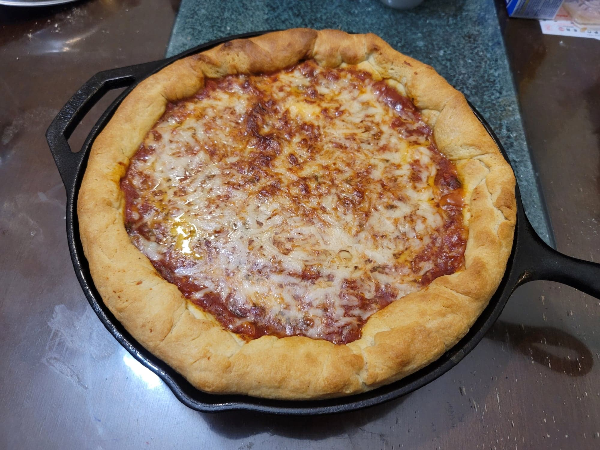

Deep Dish Pizza

Ingredients:
Dough:
- 1 1/3 cup Water, warm, about 100-110 degrees Fahrenheit
- 2 1/4 tsp Active dry yeast
- 450 g Flour
- 60 g Cornmeal
- 2 tsp Sugar
- 1 1/2 tsp Fine sea salt
- 1/4 cup Melted butter
- 1/4 cup Olive oil
Deep Dish Pizza:
- 3-4 cups Marinara sauce
- 1 lb Hot italian sausage OR Sweet italian sausage, casing removed
- 16 oz Mozzarella OR 12 oz Mozzarella + 4 oz Provolone, shredded or thinly sliced
- 2-4 oz Parmigiano-Reggiano, grated
- Olive oil, as needed
Instructions:
- Combine the yeast and water into a large mixing bowl. Let rest for about 10 minutes for the yeast to activate. Then add in the rest of the dough ingredients. Mix and knead until the dough no longer sticks to the bowl, about 4 minutes. Then transfer to a flat work surface and knead for about 10 minutes by hand, or until the dough is smooth and elastic. Roll the dough into a ball and place into a bowl greased with olive oil. Roll the dough ball around so that it is well coated with the olive oil. Cover with a plate and let rest until doubled in size, 1-2 hours.
- While waiting for the dough to rise, prepare the marinara sauce. If using store-bought marinara sauce, simmer it in a pot over low heat for 30-60 minutes, or until very thick.
- Heat a medium pan over medium heat. Add in the sausages and begin to break down with a wooden spoon until crumbled. Sauté until cooked completely.
- Preheat an oven to 425 degrees Fahrenheit.
- Once the dough has risen, transfer the dough to a flat work surface. Flatten the dough into a flat circle, about 15-16 inches in diameter. Let the dough rest if it is resisting too much so that it does not tear. Grease a 12 inch cast iron skillet with about 1 tbsp or more of olive oil. Then transfer the flattened dough into the skillet. Let the excess dough hang off the sides for now.
- Place the mozzarella in an even layer over the bottom of the dough. Then top it with the italian sausage. Then gently and evenly pour over the marinara sauce. Add the parmesan over the sauce. Fold the excess crust in or snip some off if it is too excessive. Brush the crust with some olive oil and drizzle some over the middle of the pie.
- Place the skillet into the oven and bake for 30-35 minutes, or until the crust is golden brown. Let rest at least 10 minutes before slicing. Serve hot.